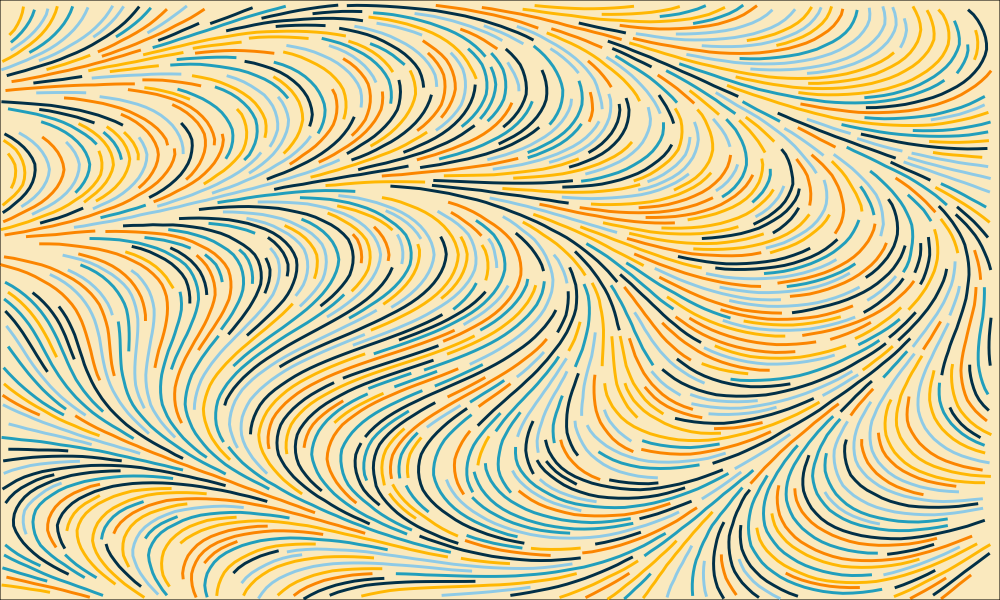

rlefer is a R package that provides an interface to the Jobard and Lefer (1997) algorithm implemented in C++. This algorithm can be used to draw non-overlapping and evenly-spaced curves in a flow field (i.e. vector field). This algorithm is thoroughly described in a scientific paper (Jobard and Lefer 1997), but you might find this article useful too.
This is an example of output you might end up getting with rlefer:

Install the package
To install the package, run:
remotes::install_github("The-Erebor-Foundry/rlefer")Getting started
In order to draw any curve with rlefer, you need to have a flow field first. That are different ways of generating a flow field, but the easiest and most common way of doing so, is by using 2D (or “two dimensional”) noise generators, such as the Perlin Noise algorithm.
In R, you can easily generate a flow field through Perlin Noise by using the noise_perlin() function from the ambient package. A flow field, in essence, is a 2D matrix of numeric values. Each value in this matrix represents an angle value. In other words, you can visualize a flow field as a 2D grid of angle values.
In the example below, we are generating a flow field that is 240x240. That is, a matrix of 240 rows and 240 columns.
library(ambient)
set.seed(100)
flow_field <- noise_perlin(c(240, 240))After you generated the flow field you want to use, you can start to draw curves in it. The rlefer package offers two main functions for you to draw these curves, which are: rlefer::non_overlapping_curves() and rlefer::even_spaced_curves().
If you want to draw curves that do not overlap each other, but you do not care about how much far they are from each other, you probably want to use the function rlefer::non_overlapping_curves(). But if you want to draw curves that are both non-overlapping and evenly-spaced between each other, then, the function rlefer::even_spaced_curves() is more suitable for you.
In the example below, we are attempting to draw 100 curves into the flow field, using 0.5 as the “separating distance”, 2.4 as the “step length”, and 30 steps for each curve, with a minimum number of steps allowed of 5. We get as a result, a tibble object with the x and y coordinates of each curve that was drawn.
library(rlefer)
curves <- even_spaced_curves(
45, 24,
100,
30,
5,
0.01 * 240,
0.5,
flow_field
)
curves# A tibble: 1,627 × 6
curve_id steps_taken x y direction_id step_ids
<dbl> <dbl> <dbl> <dbl> <dbl> <dbl>
1 0 30 45 24 0 0
2 0 30 42.7 23.3 0 1
3 0 30 40.4 22.7 0 2
4 0 30 38.1 22.1 0 3
5 0 30 35.7 21.5 0 4
6 0 30 33.4 20.8 0 5
7 0 30 31.1 20.2 0 6
8 0 30 28.8 19.6 0 7
9 0 30 26.5 18.9 0 8
10 0 30 24.2 18.3 0 9
# ℹ 1,617 more rows
# ℹ Use `print(n = ...)` to see more rows